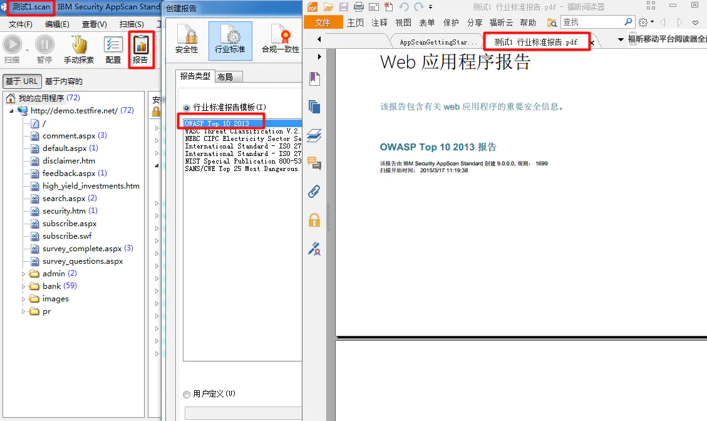

漏洞扫描原理及工具
1.扫描原理
ping检测：
通过ping返回的TTL值大致的了解一些信息
128：xp、2000、2003
64：7、2008、Linux
255：交换机、路由器等
此方法式只能大致判断，并不准确。
端口扫描
telnet IP 端口
由此可判断操作系统、软件服务类型、版本等
如：目标系统开放了137、139、445，端口可以判断目标系统为Windows系统
目标系统开放了22这样的端口很可能为Linux系统
扫描分类：
开放扫描：TCP全连接，反向ident扫描
半开放扫描：SYN扫描、IP头信息dumb扫描
隐蔽扫描：FIN扫描、ACK扫描、null扫描、XMAS扫描、TCP分段、SYN\ACK扫描
扫射扫描：ping udp ack syn icmp
其他扫描:ftp udp\icmp不可达 IP头信息dumb扫描等
2.TCP扫描
A TCP普通扫描方式
对于TCP扫描普通常采用以下方法:
TCP ACK扫描:这种扫描技术往往用来探测防火墙的类型，根据ACK位的设置情况确定该防火墙是简单的包过滤还是状态检侧机制的防火墙。
TCP窗口扫描:由于TCP.窗口大小报告方式不规则，所以这种扫描方法可以检测一些类似UNIX系统[AIX, FreeBSD等]打开的端口，以及是否过滤的端口.
TCP RPC扫描:这种方式是UNIX_系统特有的，用于检测和定位远程过程调用[RPC]端口一及其相关程序与版本标号。
B TCP扫描的高级扫描方式
修改TCP数据包中各标志位、就能得到TCP扫描的高级扫描方式，方法及原理如下：
1. TCP connect扫描
这种类型是最传统的扫描技术，程序调用connect()接口函数连接到目标端口，形成一次完整的TCP“三次握手”过程，显然能连接上的目标端口就是开放的瑞口.
(注意:在UNIX系统下使用TCP connect扫描方式不需要任何权限。)
2. TCP SYN 扫描
这种类型也称为半开放式扫描。其原理是往目标端目发送一个SYN包，若得到来自目标瑞口返回的SYN/ACK响应包.则目标端口开放:若得到RST则未开放。(注意:在UNIX下执行TCP SYN扫描必须拥有ROOT权限.)由于此类型并未建立完整的TCP“三次握手”过程，很少会有操作系统记录到，因此比起TCP connect扫描隐蔽得多。虽然此类型扫描隐蔽，但是有些防火墙监视TCP SYN扫描，有些工具(如synlogger和.Courtney)也能够检测到它。原因是:这种秘密扫描方式违反通例，在网络流量中相当醒目.
3. TGP FIN扫描
TCP FIN扫描的原理是:RFC793文档程序向一个端口发送FIN，若端口开放则此包被忽略，否则返回RST。这个是某些操作系统TCP实现存在的BUG，并不是所有的操作系统都存在这个BUG,它的准确率不高，而且此方法往往只能在UNIX系统上成功工作，因此这种扫描方法不是特别流行。它的好处在于足够隐蔽，.如果判断在使用TCP SYN扫描时可能暴露自身则可以试一试这种方法。
4. TCP reverse ident扫描
ident协议允许通过TCP连接得到进程所有者的用户名，即使该进程不是连接发起方.此方法用于得到FTP所有者信息，以及其他需要的信息等。
-
TCP Xmas Tree扫描
该程序往目标端口发送一个FIN、URG和PUSH包。.若其关闭.应该返回一个RST包. -
TCP NULL扫描
该程序发送一个没有任何标志位的TCP包，关闭的端口将返回一个RST数据包。
3.UDP扫描方式和其他扫描方式
对于UDP端口的扫描，通常采用以下方法:
1. UDP ICMP端口不可达扫描
此方法是利用UDP本身是无连接的协议，所以一个打开的UDP端口并不会返回任何响应包.如果端口关闭，某些系统将返回ICMP_PORT UNREACH信息.由于UDP是不可靠的非面向连接协议，所以这种扫描方法容易出错，还比较慢。
2. UDP recvfrom() 和write()扫描
由于UNIX系统下非ROOT用户无法读到端口不可达信息，所以NMAP提供这个仅Linux下才有效的方式。在Linux下，若一个UDP端口关闭，则第二次write()操作会失败。当调用recvfrom()
时.若未收到ICMP的错误信息.一个非阻塞的UDP套接字一般返回EAGAIN(“Try Again” ,crror=13 );如果昨到ICMP的错误信息，套接字返回ECONNREFUSED(“Conncctionrefused”,error=111).通过这种方式，NMAP将得知目标端口是否打开。
3. 其他扫描方式
除典型的TCP和UDP扫描方式外，还有一些另类的扫描方式:
分片扫描;
FTP跳转扫描。
扫描前的注意事项
1. 了解网络部署情况
2. 确定是否可以扫描，是否需要扫描，对扫描器部署
3. 扫描时间和方式
挑用户少的时候
-
定制好扫描策略
对扫描器配置 防火墙是否开启 -
企业服务是否配置了相关的安全策略，防止锁死
例如一个数据库设置密码错误三次就不再允许访问，弱口令暴力破解等注意使用
扫描器对比
国内扫描器
1. 杭州安恒
漏洞扫描和事件监测是单一产品实现。漏洞扫描速度较慢;发现漏洞类型较多，结果准确。
漏洞验证功能较好。综合展示界面直观;报表功能完整，支持任务结果多角度对比。支持开放接口。
漏洞验证提供了快速验证，测试等功能，可查看请求响应代码，方便技术人员确认漏洞。但无法批量验证。
-
知道创宇
漏洞扫描和事件监测是单一产品实现。漏洞扫描速度很快;发现漏洞类型关注高中风险，结果准确;能识别网站防护设备。
支持漏洞验证。综合展示界面直观，有专用于展示的界面;报表功能完整;支持开放接口。 -
绿盟科技
漏洞扫描和事件监测是两套产品实现。漏洞扫描速度较快;发现漏洞类型较多;结果准确。
支持漏洞验证，支持批量验证。综合展示界面一般。报表功能较为完整，以任务为单位。支持开放接口。能很好扫描中间件漏洞的仅此一家
国外扫描器：
- AWVS 可破 漏洞扫描速度较快，准确率较高，漏洞规则库较为全面。漏洞验证可查看请求响应代码，但无中文界面。报表功能完整。有多重漏洞的验证工具
- APPSCAN 可破 漏洞扫描速度一般，准确率最高，漏洞规则库最全面。漏洞验证可查看请求相应代码，拥有较完整的漏洞修复建议。报表功能完整。全中文界面
- hp webinspect 可破 漏洞扫描速度一般，准确率较高，扫描类型较多。报表功能强大。可查看请求响应代码。无中文界面。
- webcruiser
此工具偏向渗透利用工具，扫描功能较弱仅有轻量级SQL注入和XSS漏洞的扫描 功能。, 具有SQL注入漏洞利用功能。
系统扫描器
1. nessus
扫描速度快，能扫描系统层和web层类漏洞，但web漏洞发现能力不如appscan,系统扫描能力不如Nessus
2. namp
主要用于系统层扫描，扫描速度快，准确率高，漏洞规则库全面，报表功能强大。
3. nexpose
主要用于端口扫描和主机发现，不能实现web扫描和系统层扫描对渗透测试起帮助作用。
AppScan(IBM)_web和系统
AppScan是IBM的一款web安全扫描工具，具有利用爬虫技术进行网站安全渗透测试的能力，能够根据网站入口自动摸取网页链接进行安全扫描，提供了扫描、报告和修复建议等功能。是web应用程序渗透测试舞台上使用最广泛的工具之一.它是一个桌面应用程序，它有助于专业安全人员进行Web应用程序自动化脆弱性评估。
下载地址：***.com
AppScan 的破解安装流程：
appscan在网上可以下载到破解版，下载地址需要自行查找
- 首先安装AppScan，很简单直接安装即可：（必须在.NET4的环境下安装，win10自带.NET4）
- 将文件“rcl_rational.dll”，复制到AppScan的安装目录下，替换原文件，过程中不要打开文件。
- 此时可以正常打开软件（已破解），然后打开帮助菜单的，许可证发现“无可用许可证”，然后点击打开第一个按钮，准备添加许可证。
- 许可证的导入的路径必须没有中文，这是重点，否则会导致失败。所以我把他放入了D盘根目录。
- 然后点击“+”添加许可证，然后点击确定 此时的软件就已经可以正常使用了。可以开始进行扫描操作了😁
使用方法：
- 首先我们新建扫描，然后选择扫描模板，一般我们选择常规扫描
- 在URL处填写目标网址，不用勾选第一个选项，除非甲方刻意的要求只扫描一个网页。
- 这里最好选择记录的方式，然后点击红点开始记录，输入账号密码后等待记录结束。
- 然后测试策略默认就可以，也可以点击左下角的完全扫描配置，进行勾选自己想扫描的漏洞选项。
- 这里一定要选择“是”立即保存扫描，这是因为BUG，扫描过程中可能会中断，导致扫描结果丢失，故即时保存
- 扫描完成后，可以看到扫描出的漏洞，有“数据”“问题”“任务”三种查看方式，有“高、中、低”三种级别的漏洞
- 为了便于分析漏洞，我们可以把扫描结果以不同标准导出来。

AWVS_web扫描
AWVS功能介绍：
- WebScanner ：核心功能，web安全漏洞扫描 (深度，宽度 ，限制20个)
- Site Crawler：站点爬行，遍历站点目录结构
- Target Finder ：主机发现，找出给定网段中开启了80和443端口的主机
- Subdomian Scanner ：子域名扫描器，利用DNS查询
- Blind SQL Injector ：盲注工具
- Http Editor http：协议数据包编辑器
- HTTP Sniffer ： HTTP协议嗅探器 （fiddler，wireshark,bp）
- HTTP Fuzzer： 模糊测试工具 (bp)
- Authentication Tester ：Web认证破解工具
AWVS(12)的破解安装方法：
安装：
- 点击安装“acunetix_12.0.180911134”，在注册界面输入任意的账号密码，但是需要记牢
我这里输入的邮箱为
***，密码为1234abcd.。 - 默认的端口是3443，因为是破解版下面的勾不要勾选远程访问。
- 然后点击完成。
破解：
- cmd执行命令
taskkill /im Activation.exe /f&&taskkill /im wvsc.exe /f目的是彻底的结束awvs的进程(可能会提示进程不存在,没事) - 将破解补丁复制到程序根目录文件夹
- 点击打开破解补丁，然后再注册界面闭上眼睛填写即可。
- 然后点击完成，此时就破解成功啦，可以进行扫描操作了。
- 激活之后输入下面的命令，防止反复注册，然后就成功了。
cacls "C:\ProgramData\Acunetix\shared\license." /t /p everyone:r
登陆：
点击桌面awvs图标进入登录界面，输入注册的邮箱和密码。 直接输入网址也可以：***.com
AWVS的使用方法：
看这里：***.com
X-Scan_系统扫描
X-Scan是国内最著名的综合扫描器之一，完全免费，windows下使用 由未来安全出品，最终版3.3后已没有维护，公司也已转向
使用感受： 1. 在win10下确实npptools，需自己找 2. 用来作为内网探测还行 默认先做存活探测，存活的再扫描，但大部分探测失败 取消存活探测，做全量探测，还可以 3. 还会出扫描报告
WebInspect_HP_WEB
惠普公司的安全扫描产品，收费，可破解 HP WebInspect10.30 是一款文件大，系统资源占用更大的扫描软件，在安装后开机会自动启动种类繁多的服务和进程 1. 尽量将 WebInspect 安装在单独的虚拟机，分配内存8GB 以上； 2. 确保操作系统 Windows 7 及以上；并确保支持.Net Framework 4.5.x 和 SQL Server 2012； 3. 开启前还需运行 services.msc 工具检查 SQL和 WebInspect 系列服务是否全部正确启动以防扫描时出现致命错误中断； 4. 10.30版本的下载和升级可能需要 VPN。
现网版本：10 占用内存太大，没测试，放弃了
Netsparker_web
Netsparker是一款综合型的web应用安全漏洞扫描工具，它分为专业版和免费版，免费版的功能也比较强大。Netsparker与其他综合性的web应用安全扫描工具相比的一个特点是它能够更好的检测SQL Injection和 Cross-site Scripting类型的安全漏洞。 下载来源：***.com
使用感受： 1. 全英文 2. 非登陆扫描挺快的 3. 登陆扫描功能不太行（也可能是我菜） 扫描过程不会告诉你登陆有没有问题 post方式登陆很难设置 后面采用网页登陆后拿着head头的参数去登陆，也不知道道理登陆成功没有
WVSS_绿盟_web
好用，但是只有收费版 下载不到，魔法魔法
安恒明鉴
只有收费版 下载不到，魔法魔法
Nessus_系统
nessus介绍：
Nessus 是目前全世界最多人使用的系统漏洞扫描与分析软件，官方有家庭版和企业版，家庭版免费，但是 1. 限制只能扫描内网点地址 2. 扫描IP限制为16个
2020年7月前有离线破解办法，7月后官方更改了离线插件机制，破解后会删除所有插件，需要使用老版本的插件包才行，或者： docker安装破解版本：***.com 汇总命令如下：
docker pull leishianquan/awvs-nessus:v03
docker run --name nessus -it -d -p 13443:3443 -p 8834:8834 leishianquan/awvs-nessus:v03
docker exec –it nessus /bin/bash
/etc/init.d/nessusd start
账号密码：
***.com
username:leishi
password:leishianquan
nexpose_系统
nexpose是MSF公司开发的收费扫描器，也提供有功能限制的免费版本 安装比较复杂，官方直接提供安装好的虚拟机ova模板，导入即可
安装登陆
下载安装：
地址：***.com
在虚拟机中打开，然后部署
要求内存很大 8G左右
登陆
系统密码：nexpose
默认开启了DHCP
web地址：***.com
web账号：nxadmin
web密码：nxpassword
启明天镜_web_系统
与绿盟的WVSS是国内很少的web与系统都可以扫的扫描器
还带配置核查扫描
试用免费三个月（只支持50个ip地址）
可以通过修改虚拟机时间或者重置虚拟机无限使用
默认账号密码 用户名：venus 密码：venus/venustech60
可以网上都找不到下载地址，完犊子